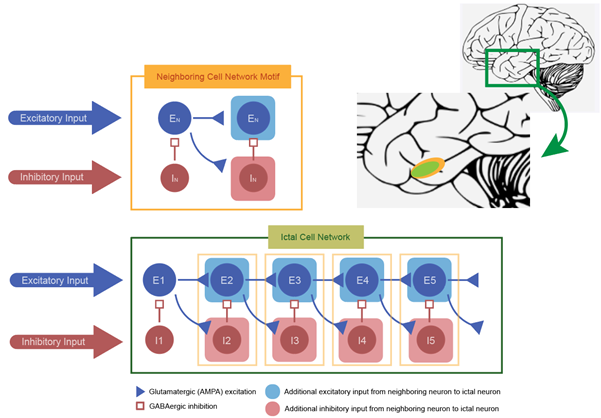

Nonelinear Dynamic Network of Focal Seizures
Theoretical, Neurology
 This project theoretically modeled ictal wave propagations in focal epileptic seizures under the hypothesis that paroxysmal depolarization shift in inhibitory interneurons is a main etiology of such phenomena.